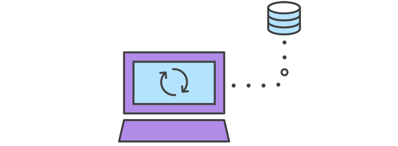

Create a git repo
A repository (aka "repo") is where git keeps track of everything about your project. It's usually in a hidden ".git" folder.
Make a simple change
A staged file is ready to be added to the project history.
A commit is a group of changes saved to a project history.
Work on a new feature
In git, a branch is just a pointer to the tip of a set of commits.
Merging one branch into another consolidates changes.
Let someone else contribute
You can connect your git repo to another remote repo.

Transfer your local changes to/from a remote repo with a push.
When changes from one branch conflict with changes from another (either remote or local).
Collaboration workflows
References and More Resources
Official Git Site
Atlassian Git Tutorials
Github Flow
Vue.js